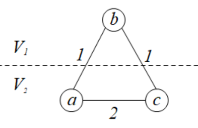

算法导论21.2 Exercises 答案
21.2-1
对于\(G\)中的任意一个最小生成树\(T\)，为了通过Kruskal算法得到\(T\)，对于相等权值下的边，在\(T\)中的应该先被遍历，不在\(T\)中的后被遍历。根据题目21.1-8的结论，如果\(e\in T\)那么这条边必定是当前边集下所添加的安全边。最终，不属于\(T\)的所有边不会将两棵树进行连通。那么对边经过这样的排序后，使用Kruskal算法得到的最小生成树恰好为\(T\)。
21.2-2
如果使用邻接矩阵存储这个图\(G\)，那么我们不使用优先队列表示这个key属性，反而是直接存储起来，每次找到仍然未被添加到树中的点的最小key值。这个算法由程序MST-PRIM'给出。嵌套的两层对\(V\)的遍历，可以知道这个算法的时间复杂度为\(O(V^2)\)。
1 | MST-PRIM'(G, w, r) |
21.2-3
主要瓶颈在于第8-14行的while循环执行了\(|E|\)次DECREASE-KEY操作。
当图\(G\)是稀疏图，即\(|E|=\Theta(V)\)时。如果使用斐波那契堆，那么整个Prim算法的时间复杂度为\(O(E+V\lg V)=O(V+V\lg V)=O(V\lg V)\)。如果直接使用二叉堆，同样整个Prim算法的时间复杂度为\(O(E\lg V)=O(V\lg V)\)。此时使用斐波那契堆和使用二叉堆具有相同的渐进时间。
当图\(G\)是稠密图，即\(|E|=\Theta(V^2)\)时。如果使用斐波那契堆，那么整个Prim算法的时间复杂度为\(O(E+V\lg V)=O(V^2+V\lg V)=O(V^2)\)。如果直接使用二叉堆，同样整个Prim算法的时间复杂度为\(O(E\lg V)=O(V^2\lg V)\)。此时使用斐波那契堆要高效于使用二叉堆。
如果使用斐波那契堆优化是有效的，即\(O(E+V\lg V)\)增长得比\(O(E\lg V)\)慢，那么有\(|E|=\omega(V)\)才能保证。
21.2-4
如果所有边的边权是\([1,|V|]\)之间的整数，那么Kruskal算法的时间复杂度可以优化到\(O(E+V)\)。因为Kruskal算法的瓶颈主要在于对所有边按照边权进行排序。如果整数都在这个区间，那么我们可以使用计数排序对这些边以\(O(E+V)\)的时间进行排序。
同样的，如果边的权值的最大值为\(W\)，那么我们需要综合考虑\(W\)的值来选择使用快速排序还是计数排序来对边进行排序；前者的时间复杂度为\(O(E\lg V)\)，后者则为\(O(E+W)\)。
21.2-5
其中一种做法是，使用\(|V|+1\)个槽来按照key值装入节点。（当key值为无穷大时装入最后一个节点）。随着每次DECREASE-KEY操作进行，可以以\(O(1)\)的时间将节点从对应的槽取出来，并插入更新后的槽中。然而，取出最小节点操作EXTRACT-MIN需要\(O(V)\)的时间进行。因此整个算法的时间复杂度为\(O(V^2+E)=O(V^2)\)。
如果范围值是从\(1\)到\(W\)，那么就需要维护\(W+1\)个槽来放置这些节点，并且用一个双向有序链表来维护这些非空的槽，那么仍然需要\(O(V^2+M+E)=O(V^2+W)\)。
综上所述，边权离散化且很小这个性质并不能很好的被Prim算法使用，还不如直接使用优先队列来维护每个节点的出队时机key。
# 21.2-6
该算法不正确。
令\(G=(V,E),V=\{a,b,c\},E=\{(a,b),(b,c),(a,c)\},w(a,b)=w(b,c)=1,w(a,c)=2\)。
如果一开始分治的划分方法是\(V_1=\{b\},V_2=\{a,c\}\)，那么在递归求解点集\(V_2\)在\(G\)上的诱导子图的最小生成树时，边\((a,c)\)就会被加入。然而实际上，边\((a,c)\)不能够作为最小生成树的边。因此这个算法是错误的。

\(\star\) 21.2-7
如果所有边权都是位于\([0,1)\)中，那么使用桶排序可以将Kruskal算法的平均时间复杂度优化到\(O(E+V)\)。与题目21.2-4类似，这种情况降低了对边按照边权进行排序所需要的时间。
然而，Prim算法无法充分使用这个边权性质，因此在这种情况下，Kruskal算法的运行速度比Prim算法快。
\(\star\) 21.2-8
首先需要证明一个结论：假设图\(G'=(V',E')\)是\(G=(V,E)\)的一个子图，\(T'=(V',E_T')\)是\(G'\)的一棵最小生成树，那么存在一个图\(G\)的最小生成树，它不包含\(E'-E_T'\)中的任意一条边。这个结论是为了说明，原来的边已经不使用了，那么到后面这些边也是多余的。
证明：根据题目21.2-1的结论，存在一个对\(E'\)的遍历顺序\(L'\)，使得Kruskal算法构造出来的树就是所需要的树\(T'\)。那么我们考虑将\(E-E'\)这些边添加到\(L'\)中，排序后形成遍历顺序\(L\)，并且确保\(L\)中原本属于\(L'\)的边的相对顺序相同。那么对于\(e\in E'-E_T'\)，假设它在\(L'\)中的序号为\(i'\)，在\(L\)中的序号为\(i\)。那么可以知道\(i'\le i\)。当Kruskal算法求\(G'\)的最小生成树时，遍历到序号为\(i\)的边，由于\(e\notin E_T'\)，这说明此时\(e\)两端的节点已经是连通的。此时考虑Kruskal算法求\(G\)的最小生成树，遍历到序号为\(i'\)的边，按照上面对\(L\)的构造可知，边\(L'[1:i'-1]\)都在\(L[1:i-1]\)中出现过，因此到了这个时间，\(L[i]\)的两个端点必定也是已经连通的。因此\(e\)在\(G\)中也不会成为最小生成树的边。因此原结论成立。
最终，这个题目所求的算法是：将\(G=(V,E)\)中给定的某棵最小生成树\(T=(V,E_T)\)中的所有边和新加入的所有边构成一个新图\(G''=(V'',E'')\)，再对\(G''\)执行一次Kruskal算法得到的就是所求的一棵最小生成树。由于\(|V''|=|V|+1,|E''|\le 2|V|-1\)，因此这个更新操作的时间复杂度为\(O(V\lg V)\)。